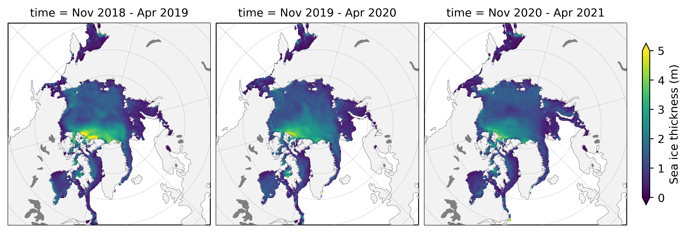

ICESat-2 Arctic Sea Ice Analysis¶
NASA’s Ice, Cloud, and Land Elevation Satellite-2 (ICESat-2) is the most advanced laser altimetry system ever launched. The combination of meter-scale horizontal resolution and centimeter-scale vertical precision, makes ICESat-2 extremely well engineered for measuring small-scale sea ice freeboard variability. In this Jupyter Book we provide a top-level analysis of winter Arctic sea ice thickness variability derived from ICESat-2 freeboards and NESOSIM snow loading since its launch in fall 2018.

Background¶
The ICESat-2 Project Science Office has produced and disseminated a number of official data products through the National Snow and Ice Data Center (NSIDC) including the Arctic and Southern Ocean sea ice freeboard dataset (ATL10), which provides along-track estimates of the extension of sea ice above the local sea surface for each of the six beams of ICESat-2.
Using assumptions regarding the depth and density of the snow layer on top of the ice, along with estimates of the density of the sea ice itself, ICESat-2 freeboard data (ATL10) can be converted to an estimate of sea ice thickness. Estimates of Winter Arctic sea ice thickness using snow loading from the NASA Eulerian Snow on Sea Ice Model (NESOSIM) have been produced and disseminated through the NSIDC (https://nsidc.org/data/IS2SITMOGR4). More information about the methodology behind this dataset can be found in our original methodology paper. A manuscript is currently in review regarding the analysis of the first three winters of data collected, which was the original motivation behind the creation of this Jupyter Book.
Our goal going forward is to continue to update this book as new data is produced and to share additional analyses of the sea ice state using the incredible data collected by ICESat-2 - going beyond freeboard/thickness. The focus of this back thus far has been on the Arctic, due mainly to our increased confidence regarding snow on sea ice conditions compared to the Southern Ocean. Similarly, we currently do not produce any thickness estimates during summer as melt ponds complicate our retrievals of freeboard and simulations of snow depth. However, do continue to watch this space for futher updates as we learn more about the data from this relatively new mission and further its capabilities.
Jupyter Book description¶
Jupyter Books provide a novel means of compiling various related Jupyter Notebooks into one convenient and well-indexed location. Here, a series of Jupyter Notebooks are used to provide a visual demonstration of our efforts to analyze winter Arctic sea ice conditions, primiarly freeboard and thickness, derived from ICESat-2 data, along with other relevant datasets.
We have also set up the book so that users can easily run the code without needing to download anything by using the hosting service called Binder. To run a notebook (chapter pages in the book) in Binder, just click the Binder tab under the rocket ship icon at the top of each notebook. This option is configured for all notebooks except the modules in the Helper Functions section and the data wrangling notebook.
Accessing the data¶
The monthly gridded ICESat-2 winter Arctic sea ice thickness data are archived and made publically available at the NSIDC (https://nsidc.org/data/IS2SITMOGR4). However, to simply our analysis we have also uploaded these same data to a google cloud storage bucket. We have also generated and uploaded a single netcdf file containing all the data presented in this Jupyter Book in the same bucket under the name icesat2-book-data.nc. This dataset contains all the gridded ICESat-2 sea ice thickness data along with all other datasets used in the notebook to help contextualize the sea ice and atmospheric conditions through each winter. All datasets included have been regridded to the same NSIDC North Polar Sterographic grid (the native grid of the ICESat-2 sea ice data used), to simplify the mapping and comparisons. See the Data Wrangling page for more information each dataset and on on the regridding process.
Packages¶
All of the notebooks in this notebook utilize xarray, a python package built for working with multi-dimensional data like the monthly gridded sea ice data. Xarray is especially useful for time series data and allows for easily plotting data on map projections via compatability with the python packages cartopy and hvplot.
License¶
All content in this Jupyter Book is distributed under the MIT license.
Contributors¶
Nicole Keeney (Original repository creator)
Alek Petty (Current repository lead, summer 2022 onwards)
References¶
Petty, A. A., N. T. Kurtz, R. Kwok, T. Markus, T. A. Neumann (2020), Winter Arctic sea ice thickness from ICESat‐2 freeboards, Journal of Geophysical Research: Oceans, 125, e2019JC015764. doi:10.1029/2019JC015764
Petty A. A., N. Keeney, A. Cabaj, P. Kushner, M. Bagnardi (2022), Winter Arctic sea ice thickness from ICESat-2: upgrades to freeboard and snow loading estimates and an assessment of the first three winters of data collection, The Cryosphere Discuss (preprint), doi: 10.5194/tc-2022-39.